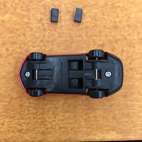
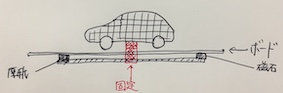

Xtechdesign:3
Week1
10/25-31 トイハッキング
○100均のおもちゃを使って役に立たない機械を作ろう○
作業工程
まず100均に行きおもちゃを購入した。○購入したもの○
お絵かきボード（磁石に反応して絵が描けるもの）赤いミニカー
のびのびハンド（マジックハンド）
何を作るか考えながらお絵かきボードの上で車を走らせていると、
ミニカーには車輪のあと（わだち）がないことに気づいた。ミニカーにもあれば面白いのではないかと思ったが、
それだと役に立ってしまっているので、その書かれたわだちをすぐに消せば役に立たないのではないかと考えた。
❶まず初めにお絵かきボードの消しゴムに使われている磁石を外し、車のタイヤと同じ大きさに切る。

❷切ったものを車の前輪と後輪の間にボンドで貼り付けて、乾かす。
❸絵を描くボードだけを外し、車の下に置く。

❹余った磁石を切り、車の前と後ろに厚紙を使って取り付ける。
❺車/ボード/厚紙＋磁石の順になるように重ねて固定し、完成。

完成品
取扱説明書
『わだち消去車』○緑の持ち手を左右に動かしてください。
○車が左右に動きわだちを描いていきますが、すぐに消されてしまいます。
○気づき、まとめ○
今回の役に立たないものを作るという課題を初めに聞いたときは、使い道が全く違うもの二つを合体させたらすぐにできるのではないかと思っていたが、いざ制作に取り掛かると想像していたよりも難しく
勝手に役に立つものを作ってしまっていた。今回僕が作った「わだち消去車」も雪国出身の友人は
「実際にあればとても役に立つ」と言っていたので、一見すると無意味なものでも角度を変えて見てみないと、
本当にそれが無意味なのかどうかはわからないのだと感じた。こうしてみると、全く意味のないものなど
世の中にはないのではないかという気持ちもした。
Week2
11/29-12/25 ☆ゆるゆるさーきっと☆
○LEDのみでバイアスブレイク○
＊ワーク（身の回りの光るものを見つけ写真を撮る）
撮影した写真にラベルをつける
「誰が、いつ、何に、どこで、どのように」
作業工程
micro:bitを使って何かできないかを考えた。
わざわざ視覚的にカウントしなくても良いが、気になるものということで
microbitで『まばたきカウンター』を作ることにした。
❶micro:bitに金属が触れるとどんどんカウントされていくプログラムを登録
❷二本のコードを使い金属を張った紙に取り付ける
完成品
これを応用して、扉が1日に何回開け閉めされるのかを計測できる機械を作成した。
○気づき、まとめ○
普通はやらない組み合わせを見つけても、もしかすると他人からすればそれが普通かもしれないので、バイアスブレイクを見つけるのがいかに大変かがよくわかった。
また、自分だけではなくて他人も面白いと感じるものを見つけるのは他のことでも重要だが、それも
いかに難しいかを改めて思い知らされた。
今回は主にLEDのみだったが、それのおかけでいつもなら「ただ光るもの」としか
思わないLEDをいろんな角度から見ることができた。やはり、一つの角度からだけではなくいろんな角度からみないと
見つけられないものもあるのだと分かった。
Week3
1/10-16 アウトプットデバイス/リフレクション
完成品を作る
作業工程
Fusion360と3Dプリンタを使いラジコンカーのボディを作ることにした。このシャシーに合うものを作成する↓
❶fusionのスクリプト機能を使い、車のボディをモデリングする。
❷車のシャシーとをつなぐアタッチメントをモデリングする。
❸ ❶と❷を結合させる。
❹3dプリンタ用にサポート材を打つ
❺3dプリンタで出力

❻洗浄する
❼乾かして、サポート材を外す
❽完成
○気づき、まとめ○
前々から車のボディを3dプリンタで出力してみたいと思っていたので今回こうして完成品を作ることができてよかった。モデリングしていく中で、初めにノギスを使って細かくサイズを測ったが後になってそれがいかに重要かが分かった。
初めの計測の段階を適当にこなしてしまうと、3Dモデリングをするときに全てがずれたり、完成したものが使い物に
ならなかったりしてしまう。どんなことも基礎は大切だというが、今回改めてそれを考えさせられた。
また、今回シャシーとつなぐアタッチメントの部分が上手くいかなかった。サポート材が少し足りなかったからだ。
これを踏まえて3Dプリンタをもっと使っていきたい。
!自主制作!
○Adobe Illustratorを使用してロゴマークを作成○
登竜門というサイトをみているとロゴマークを募集していたので応募してみた。応募要項
当協議会は、第2次世界大戦当時に旧海軍飛行機ゆかりの地として空でつながっていた4市（兵庫県姫路市・兵庫県加西市・大分県宇佐市・鹿児島県鹿屋市）にある地方公共団体、観光関係団体、地域団体及び事業者等が、全国的なネットワークのもとに連携、協力して、現在の平和が尊い犠牲の礎の上にあることを後世に伝えていくことを目的として、平成30年7月に組織されました。そこで、発足を記念して、協議会の象徴となるロゴマークを募集します。加西市ホームページより引用
下絵
完成したロゴマーク
○コンセプト○
右側部分は平和を象徴する「オリーブ」をイメージし、４市の形がオリーブの葉になるように配置した。
また、わかりやすいように形だけでなくそれぞれの市章の色も割り当てた。
他にも旧海軍飛行機ゆかりの地である４市を通るように紙飛行機の軌道を描き、その軌道を「ピースサイン」に見立て、
平和を紙飛行機に乗せて４つの市から世界中へと運んでほしいという思いを込めている。
○やってみて○
今までこのようなコンテストに応募したことがなかったのでとても良い経験になった。
今回このマークは選ばれなかったが、受賞したロゴマークを見てみるととてもシンプルなものだった。
僕は平和といえば○○というようなアプローチで進んでいったので、平和の象徴であるオリーブの葉を
イメージして取り入れたが、必ずしも具体的なものである必要はなく、今回受賞されたロゴマークのように
平和＝丸、円のような抽象的な概念でもいいんだと分かった。むしろその方が伝わりやすい場合もあるということを学んだ。
return